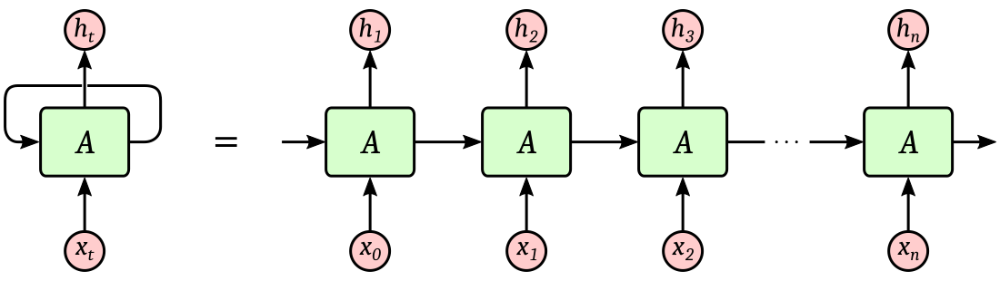

Recurrent Neural Networks (RNN) have existed for long at this point, and RNNs without attention mechanism (plain-simple RNN architecture) are no longer the hottest thing either.
Still, RNN represents one of the first step towards understanding training for sequential data input, where the context of previous inputs are crucial for predicting the next output.
Karpathy’s introduction to the The Unreasonable Effectiveness of Recurrent Neural Networks along with the attached Character Level RNN are among the best resources to get started with RNN. However, as I progressed my way through the implementation of min-char-rnn, I realized that while the blogpost suffices for an intuitive understanding of RNN, and the code works through the implementation from scratch, a lot of heavy-lifting in terms of manual backpropagation implementation, and flow of gradient during training to update the weights and parameters of the models are left for the readers to understand on their own.
We’ll be going through the steps one-by-one, mainly focusing on backpropagation calculation in detail to understand the behind-the-hood working of RNN.
Overview of RNN
Recurrent Neural Networks are at the core an attempt to develop an internal structure that is appropriate for a particular task domain using internal ‘hidden’ units which are not part of the input or output vectors.
Learning becomes more interesting but more difficult when we introduce hidden units whose actual desired states are not specified by the task. The simplest for of the learning procedure is for layered networks which have a layer of inputs at the bottom; any number of intermediate layers; and a layer of output units at the top.
An input vector is presented to the network by setting the states of the input units.
Then the stats of the units in each layer are determined by applying steps as followed for input vector $ x_t $ :
-
Hidden State Calculation: $ h_t = \tanh(W_{xh} \cdot x_t + W_{hh} \cdot h_{t-1} + b_h) $
-
Output and Softmax:
$ y_t = W_{hy} \cdot h_t + b_y $
$ p_t = \frac{ \exp(y_t) }{ \sum exp(y_t) } $
where, $ h_{t-1} $ represents the hidden state input from previous states, $ b_h $ represents the biased term in hidden state calculation, and $ p_t $ represents the softmax output from the output vector $ y_t $.
 An illustration of character level RNN from Andrej Karpathy’s blogpost
An illustration of character level RNN from Andrej Karpathy’s blogpost
RNNs are particularly effective in tasks like language modeling, machine translation, etc. where the context of previous characters are crucial for predicting the next one.
Now, let’s work through min-char-rnn code one-step at a time:
lossFun Function:
This function runs both forward and backward passes through the RNN and computes the loss and gradients.
def lossFun(inputs, targets, hprev):
"""
Runs forward and backward passes through the RNN.
inputs, targets: Lists of integers. For some i, inputs[i] is the input
character (encoded as an index to the ix_to_char map) and
targets[i] is the corresponding next character in the
training data (similarly encoded).
hprev: Hx1 array of initial hidden state.
returns: loss, gradients on model parameters, and last hidden state.
"""
Inputs:
inputs: Indices representing the input characters.targets: Indices representing the next characters in the sequencehprev: Initial hidden state from the previous sequence
Outputs:
loss: Cross-entropy loss- Gradients for the weights and biases (
dWxh, dWhh, dWhy, dbh, dby) - The last hidden state (
hs[len(inputs)-1])
Forward Pass
The forward pass computes the hidden states and the outputs at each time step.
# Initialize storage for variables needed for forward and backward passes
xs, hs, ys, ps = {}, {}, {}, {}
hs[-1] = np.copy(hprev) # Initialize with the given hidden state
loss = 0
For each time step $ t $:
- Input Encoding: The input characters are converted into one-hot encoding vectors for input into the model.
xs[t] = np.zeros((vocab_size, 1)) # one-hot encoding
xs[t][inputs[t]] = 1
- Hidden State Calculation: The hidden states to capture the task information and develop/emulate an internal structure is computed using: $$ h_t = \tanh(W_{xh}\cdot x_t + W_{hh} \cdot h_{t-1} + b_h) $$
hs[t] = np.tanh(np.dot(Wxh, xs[t]) + np.dot(Whh, hs[t-1]) + bh)
- Output and Softmax: We first calculate the unnormalized scores (
ys[t]) and then converet those into softmax probabilities (ps[t]) for output: $$ y_t = W_{hy} \cdot h_t + b_y $$ $$ p_t = \frac{\exp(y_t)}{\sum \exp(y_t)} $$
ys[t] = np.dot(Why, hs[t]) + by
ps[t] = np.exp(ys[t]) / np.sum(np.exp(ys[t]))
- Loss Calculation: The cross-entropy loss at each time step is then added up using:
loss += -np.log(ps[t][targets[t],0])
Backpropagation through time (BPTT)
- Gradient of Loss w.r.t Softmax Output (
ps[t]): For each time step t: The loss at time step $ t $ is given by: $$ Loss_t = - \log(p_{t,target}) $$ The derivative of the loss w.r.t softmax probabilities $p_t$ is: $$ \frac{\partial Loss_t}{\partial p_t} = p_t - 1_{target} $$ Where:
- $ p_t $ is the softmax probability vector at time step t.
- $ 1_{target} $ is a one-hot vector with a 1 at the index of the target character.
dy = np.copy(ps[t])
dy[targets[t]] -= 1
- Gradient w.r.t Output Weights (
Why) and Bias (by): The output $ y_t $ at each time step is computed as: $$ y_t = W_{hy} \cdot h_t + b_y $$ The gradients of the loss w.r.t the weights and biases are given by: $$ \frac{ \partial Loss_t }{\partial W_{hy}} = \sum_t \left(\frac{ \partial Loss_t }{ \partial y_t } \cdot \frac{ \partial y_t }{ \partial W_{hy}} \right)= \sum_t( p_t - 1_{target}).h_t^T $$ $$ \frac {\partial Loss_t }{\partial b_y} = \sum_t(p_t - 1_{target}) $$
dWhy += np.dot(dy, hs[t].T)
dby += dy
- Gradient w.r.t Hidden State (
h_t): To backpropagate into the hidden state, we need to account for both the current time step’s gradient and the incoming gradient from the next time step: $$ \frac{ \partial Loss_t }{\partial h_t} = W_{hy}^T \cdot \frac{\partial Loss_t}{ \partial y_t} + \frac{\partial Loss_{t+1}}{\partial h_t} $$ Where:
- $ \frac{\partial Loss_{t+1}}{\partial h_t} $ is the gradient passed back from the next time step.
dh = np.dot(Why.T, dy) + dhnext
- Gradient w.r.t Activation Function (
tanh): The hidden state is computed using the $ tanh $ activation function: $$ h_t = \tanh(W_{xh} \cdot x_t + W_{hh} \cdot h_{t-1} + b_h) $$ The input to thetanhactivation function is: $$ a_t = W_{xh} \cdot x_t + W_{hh} \cdot h_{t-1} + b_h $$ The gradient through the $ tanh $ function is: $$ dhraw = \frac{\partial Loss_t}{\partial a_t} = \frac{ \partial Loss_t }{\partial ({W_{xh} \cdot x_t + W_{hh} \cdot h_{t-1} + b_h })} = (1 - h_{t}^2) \odot \frac{ \partial Loss_t }{\partial h_t} $$ Here, $ (1-h_t^2) $ is the derivative of $ tanh(h_t) $.
dhraw = (1- hs[t]*hs[t]) * dh
- Gradient w.r.t Input Weights (
Wxh), Hidden Weights (Whh), and Hidden Bias (bh): Now, compute the gradients w.r.t weights and biases connecting the inputs and hidden states: The input to thetanhactivation function is: $$ a_t = W_{xh} \cdot x_t + W_{hh} \cdot h_{t-1} + b_h $$
- For input-to-hidden weights $ W_{xh} $: $$ \frac{\partial Loss_t}{\partial W_{xh}} = \sum_t \left(\frac{\partial Loss_t}{\partial a_t} \cdot \frac{\partial a_t}{\partial W_{xh}} \right)= \sum_t \left(\text{dhraw} \cdot x_t^T \right) $$
- For hidden-to-hidden weights $ W_{hh} $: $$ \frac{\partial Loss_t}{\partial W_{hh}} = \sum_t \left(\frac{ \partial Loss_t}{\partial a_t} \cdot \frac{ \partial a_t }{\partial W_{hh}} \right) = \sum_t (\text{dhraw} \cdot h_{t-1}^T) $$
- For hidden bias $ b_h $: $$ \frac{\partial Loss_t}{\partial b_h} = \sum_t \frac{\partial Loss}{\partial a_t} = \sum_tdhraw $$
dbh += dhraw
dWxh += np.dot(dhraw, xs[t].T)
dWhh += np.dot(dhraw, hs[t-1].T)
- Gradient Propagation to Previous Time Step (
dhnext): Propogate the gradient back to the previous time step: $$ \frac{ \partial Loss_t}{\partial h_{t-1}} = W_{hh}^T \cdot \frac{\partial Loss_t}{\partial a_t} = W_{hh}^T \cdot dhraw $$
dhnext = np.dot(Whh.T, dhraw)
Summary:
- Step 1: Compute gradient of the loss w.r.t the output probabilities.
- Step 2: Calculate the gradients for the weights and biases connecting hidden states to outputs.
- Step 3: Propagate the gradient through the hidden state, taking into account the contribution from the next time step.
- Step 4: Backpropagate through the $ tanh $ activation function.
- Step 5: Compute the gradients w.r.t the weights and biases connecting the inputs and hidden states, as well as the hidden-to-hidden weights.
- Step 6: Propagate the gradient back to the previous time step’s hidden state.
These steps iteratively update the gradient accumulations by iterating backward through the time steps of the sequence.
Now, with all the heavy-lifting stuffs taken care of, I think understanding RNNs in-depth would be a lot easier than before. Here’s the min-char-rnn code commented and explained a bit more in details to work through the code without losing the touch with explanation.